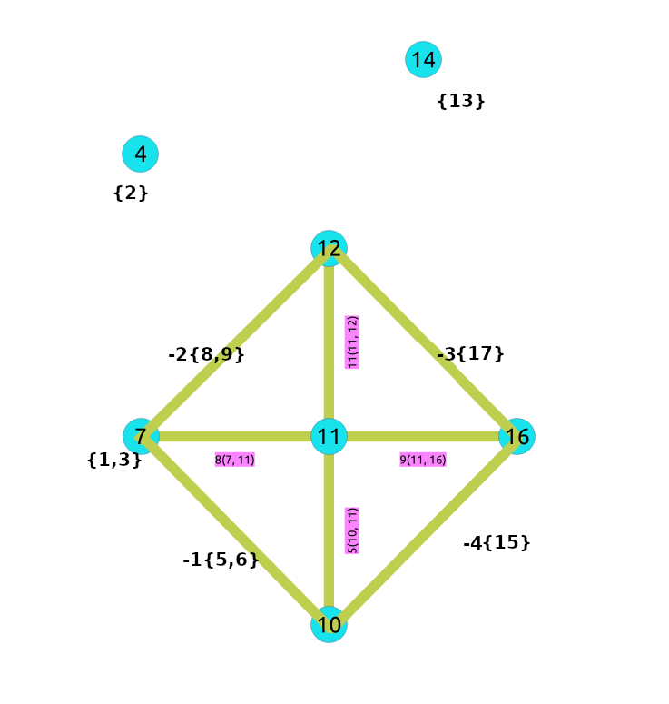
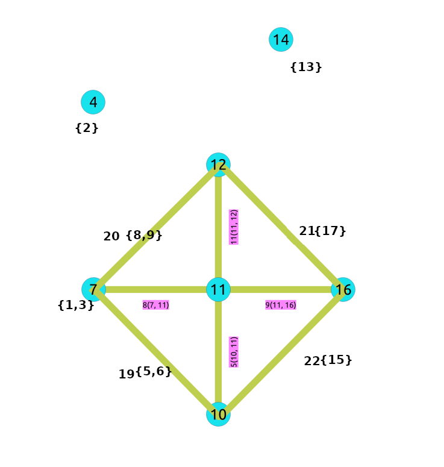

pgr_kontraktion¶
pgr_contraction - Utför grafkontraktion och returnerar de kontraherade topparna och kanterna.
Tillgänglighet
Version 4.0.0
Förändring på gång, signaturer inte längre tillgängliga:
pgr_contraction(text,bigint[],integer,bigint[],boolean)
Version 3.8.0
Ny signatur:
Den tidigare obligatoriska parametern Contraction order är nu valfri med namnet
methods.Nytt namn och ordning på valfria parametrar.
Föråldrad signatur pgr_contraction(text,bigint[],integer,bigint[],boolean)
Version 3.0.0
Ändring av resultatkolumner:
seqtas bortNamnändring från
pgr_contractGraphBuggfixar
Funktion befordrad till tjänsteman.
Version 2.3.0
Ny experimentell funktion.
Beskrivning¶
Kontraktion minskar storleken på grafen genom att ta bort några av topparna och kanterna och till exempel lägga till kanter som representerar en sekvens av ursprungliga kanter, vilket minskar den totala tid och det utrymme som används i grafalgoritmer.
De viktigaste egenskaperna är:
Processen utförs endast på kanter med positiva kostnader.
Returnerar inte hela den kontraherade grafen.
Endast ändringar i diagrammet returneras.
De returnerade värdena inkluderar:
De nya kanterna som genereras av linjär sammandragning.
De modifierade topparna som genereras av sammandragning av återvändsgränder.
De returnerade värdena är ordnade enligt följande:
kolumn
idstigande när det är en modifierad vertex.kolumn
idmed negativa tal fallande när det är en ny kant.
För närvarande finns det två typer av sammandragningsmetoder som ingår i denna funktion:
Kontraktion för återvändsgränd. Se pgr_contractionDeadEnd - Förslag.
Linjär sammandragning. Se pgr_contractionLinear - Föreslagen.
 Boost-graf inuti
Boost-graf inuti
Underskrifter¶
[directed, methods, cycles, forbidden](type, id, contracted_vertices, source, target, cost)- Exempel:
Dead end och linjär sammandragning i den ordningen på en odelad graf.
SELECT * FROM pgr_contraction(
'SELECT id, source, target, cost, reverse_cost FROM edges', false);
type | id | contracted_vertices | source | target | cost
------+----+---------------------+--------+--------+------
v | 4 | {2} | -1 | -1 | -1
v | 7 | {1,3} | -1 | -1 | -1
v | 14 | {13} | -1 | -1 | -1
e | -1 | {5,6} | 7 | 10 | 2
e | -2 | {8,9} | 7 | 12 | 2
e | -3 | {17} | 12 | 16 | 2
e | -4 | {15} | 10 | 16 | 2
(7 rows)
Parametrar¶
Parameter |
Typ |
Beskrivning |
|---|---|---|
|
Kanter SQL enligt beskrivningen nedan. |
Valfria parametrar¶
Kolumn |
Typ |
Standard |
Beskrivning |
|---|---|---|---|
|
|
|
|
Sammandragning valfria parametrar¶
Kolumn |
Typ |
Standard |
Beskrivning |
|---|---|---|---|
|
|
|
Beställde sammandragningsoperationer.
|
|
|
\(1\) |
Antal gånger som sammandragningsmetoderna ska utföras. |
|
|
|
Identifierare av hörn som är förbjudna för sammandragning. |
Inre frågor¶
Kanter SQL¶
Kolumn |
Typ |
Standard |
Beskrivning |
|---|---|---|---|
|
ANY-INTEGER |
Identifierare av kanten. |
|
|
ANY-INTEGER |
Identifierare för den första slutpunktsvertexen på kanten. |
|
|
ANY-INTEGER |
Identifierare för den andra slutpunktsvertexen på kanten. |
|
|
ANY-NUMERISK |
Kantvikt ( |
|
|
ANY-NUMERISK |
-1 |
Kantvikt (
|
Var:
- ANY-TAL:
SMALLINT,INTEGER,BIGINT- ANY-NUMERICAL:
SMALLINT,INTEGER,BIGINT,REAL,FLOAT
Resultat kolumner¶
Returnerar uppsättning av (type, id, contracted_vertices, source, target, cost)
Funktionen returnerar en enda rad. Kolumnerna i raden är:
Kolumn |
Typ |
Beskrivning |
|---|---|---|
|
|
Typ av rad.
|
|
|
Alla siffror i denna kolumn är
|
”kontrakterade vertikaler |
|
Array med identifierare för kontrakterade vertex. |
|
|
|
|
|
|
|
|
|
Ytterligare exempel¶
Endast återvändsgränd kontraktion¶
SELECT type, id, contracted_vertices FROM pgr_contraction(
'SELECT id, source, target, cost, reverse_cost FROM edges',
methods => ARRAY[1]);
type | id | contracted_vertices
------+----+---------------------
v | 4 | {2}
v | 6 | {5}
v | 7 | {1,3}
v | 8 | {9}
v | 14 | {13}
(5 rows)
Endast linjär sammandragning¶
SELECT * FROM pgr_contraction(
'SELECT id, source, target, cost, reverse_cost FROM edges',
methods => ARRAY[2]);
type | id | contracted_vertices | source | target | cost
------+----+---------------------+--------+--------+------
e | -1 | {3} | 1 | 7 | 2
e | -2 | {3} | 7 | 1 | 2
(2 rows)
Cykeln¶
Kontrahering av en graf kan göras med mer än en operation. Ordningen på operationerna påverkar den resulterande kontraherade grafen, efter att ha tillämpat en operation ändras uppsättningen toppar som kan kontraheras med en annan operation.
Denna implementation cyklar cyklar gånger genom metoderna .
<input>
do max_cycles times {
for (operation in operations_order)
{ do operation }
}
<output>
Upphandling av provdata¶
I det här avsnittet visas exempel på hur man bygger upp och använder en kontraherad graf.
Exempeldata för en enkelriktad graf används
först en operation i en återvändsgränd och därefter en linjär operation.
Konstruktion av grafen i databasen¶
Den ursprungliga grafen:

Resultaten representerar inte den sammandragna grafen. De representerar de ändringar som måste göras i grafen efter att man har tillämpat sammandragningsmetoderna.
Observera att toppar, till exempel \(6\), inte visas i resultaten eftersom de inte påverkades av sammandragningsalgoritmen.
SELECT * FROM pgr_contraction(
'SELECT id, source, target, cost, reverse_cost FROM edges', false);
type | id | contracted_vertices | source | target | cost
------+----+---------------------+--------+--------+------
v | 4 | {2} | -1 | -1 | -1
v | 7 | {1,3} | -1 | -1 | -1
v | 14 | {13} | -1 | -1 | -1
e | -1 | {5,6} | 7 | 10 | 2
e | -2 | {8,9} | 7 | 12 | 2
e | -3 | {17} | 12 | 16 | 2
e | -4 | {15} | 10 | 16 | 2
(7 rows)
Efter att ha gjort den återvändsgränd sammandragning operation:

Efter att ha gjort den linjära sammandragningsoperationen på grafen ovan:
{kind=link}
Processen för att skapa sammandragningsgrafen i databasen:¶
Lägg till ytterligare kolumner¶
Lägga till extra kolumner i tabellerna edges och vertices. I denna dokumentation kommer följande att användas:
Kolumn. |
Beskrivning |
|---|---|
”kontrakterade vertikaler |
Uppsättningen av toppar som hör till toppen/kanten |
|
På toppunktstabellen
|
|
På kanten av bordet
|
ALTER TABLE vertices
ADD is_contracted BOOLEAN DEFAULT false,
ADD contracted_vertices BIGINT[];
ALTER TABLE
ALTER TABLE edges
ADD is_new BOOLEAN DEFAULT false,
ADD contracted_vertices BIGINT[];
ALTER TABLE
Lagra information om sammandragning¶
Spara sammandragningsresultaten i en tabell.
SELECT * INTO contraction_results
FROM pgr_contraction(
'SELECT id, source, target, cost, reverse_cost FROM edges', false);
SELECT 7
Uppdatera tabellerna för kanter och toppar¶
Använd kolumnen is_contracted för att ange de toppar som är kontraherade.
UPDATE vertices
SET is_contracted = true
WHERE id IN (SELECT unnest(contracted_vertices) FROM contraction_results);
UPDATE 10
Fyll i contracted_vertices med informationen från de resultat som hör till topparna.
UPDATE vertices
SET contracted_vertices = contraction_results.contracted_vertices
FROM contraction_results
WHERE type = 'v' AND vertices.id = contraction_results.id;
UPDATE 3
Infoga de nya kanterna som genererats av pgr_contraction.
INSERT INTO edges(source, target, cost, reverse_cost, contracted_vertices, is_new)
SELECT source, target, cost, -1, contracted_vertices, true
FROM contraction_results
WHERE type = 'e';
INSERT 0 4
Den kontraherade grafen¶
Punkter som hör till den kontraherade grafen.
SELECT id FROM vertices WHERE is_contracted = false ORDER BY id;
id
----
4
7
10
11
12
14
16
(7 rows)
Kanter som hör till den kontraherade grafen.
WITH
vertices_in_graph AS (SELECT id FROM vertices WHERE is_contracted = false)
SELECT id, source, target, cost, reverse_cost, contracted_vertices
FROM edges
WHERE
EXISTS (SELECT id FROM vertices AS v WHERE NOT is_contracted AND v.id = edges.source)
AND
EXISTS (SELECT id FROM vertices AS v WHERE NOT is_contracted AND v.id = edges.target)
ORDER BY id;
id | source | target | cost | reverse_cost | contracted_vertices
----+--------+--------+------+--------------+---------------------
5 | 10 | 11 | 1 | -1 |
8 | 7 | 11 | 1 | 1 |
9 | 11 | 16 | 1 | 1 |
11 | 11 | 12 | 1 | -1 |
19 | 7 | 10 | 2 | -1 | {5,6}
20 | 7 | 12 | 2 | -1 | {8,9}
21 | 12 | 16 | 2 | -1 | {17}
22 | 10 | 16 | 2 | -1 | {15}
(8 rows)
Visuellt:
{kind=link}
Använda den kontraherade grafen¶
Beroende på den slutliga tillämpningen ska grafen förberedas. I detta exempel kommer den slutliga tillämpningen att vara att beräkna kostnaden från två toppar i originalgrafen genom att använda den kontraherade grafen med pgr_dijkstraCost
Det finns tre fall när man beräknar den kortaste vägen mellan en given källa och ett givet mål i en kontrakterad graf:
Fall 1: Både källan och målet hör till den kontrakterade grafen.
Fall 2: Källa och/eller mål tillhör en edge-subgraf.
Fall 3: Källa och/eller mål hör till en vertex.
Den slutliga applikationen bör ta hänsyn till alla dessa fall.
Skapa en vy (eller tabell) av den kontraherade grafen:
DROP VIEW IF EXISTS contracted_graph;
NOTICE: view "contracted_graph" does not exist, skipping
DROP VIEW
CREATE VIEW contracted_graph AS
SELECT id,source, target, cost, reverse_cost, contracted_vertices FROM edges
WHERE
EXISTS (SELECT id FROM vertices AS v WHERE NOT is_contracted AND v.id = edges.source)
AND
EXISTS (SELECT id FROM vertices AS v WHERE NOT is_contracted AND v.id = edges.target);
CREATE VIEW
Skapa den funktion som ska använda den kontraherade grafen.
CREATE OR REPLACE FUNCTION path_cost(source BIGINT, target BIGINT)
RETURNS SETOF FLOAT AS
$BODY$
SELECT agg_cost FROM pgr_dijkstraCost(
/* The inner query */
'WITH
cul_de_sac AS (
SELECT contracted_vertices || id::INTEGER as v
FROM vertices WHERE ' || $1 ||' = ANY(contracted_vertices)
OR ' || $2 ||' = ANY(contracted_vertices)),
linears_to_expand AS (
SELECT id, contracted_vertices
FROM edges WHERE is_new AND (' || $1 ||' = ANY(contracted_vertices)
OR '|| $2 ||' = ANY(contracted_vertices))
),
additional_vertices AS (
SELECT * FROM cul_de_sac UNION SELECT contracted_vertices FROM linears_to_expand)
SELECT id, source, target, cost, reverse_cost
FROM edges, additional_vertices WHERE source = ANY(v) OR target = ANY(v)
UNION
SELECT id, source, target, cost, reverse_cost
FROM contracted_graph LEFT JOIN linears_to_expand c USING (id) WHERE c.id IS NULL',
source, target, false);
$BODY$ LANGUAGE SQL;
CREATE FUNCTION
Fall 1: Både källan och målet hör till den kontrakterade grafen.
SELECT * FROM path_cost(10, 12);
path_cost
-----------
2
(1 row)
Fall 2: Källa och/eller mål hör till en kant som har kontraherade toppar.
SELECT * FROM path_cost(15, 12);
path_cost
-----------
3
(1 row)
Fall 3: Källa och/eller mål hör till en vertex som har kontrakterats.
SELECT * FROM path_cost(15, 1);
path_cost
-----------
5
(1 row)
Se även¶
Index och tabeller